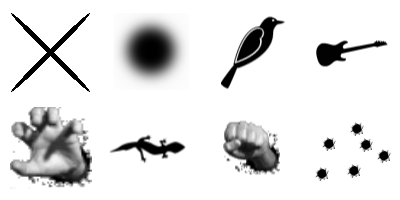

ZTrack: JavaScript-Based Click Tracker
This is just a basic script I wrote that tracks were your users click (relative to a specific element, usually your <body>). What for? SEO! If you see your users clicking on an image that's not a link, maybe you should make it a link. If you see your users not clicking on a link enough, maybe you should try moving it closer to the top; and after you do so, you can see the difference in click-rate.
For example, click on the images below; then click on the "View Clicks" button to see where other users (and you) had have clicked the most.

Press the button to see users' clicks: